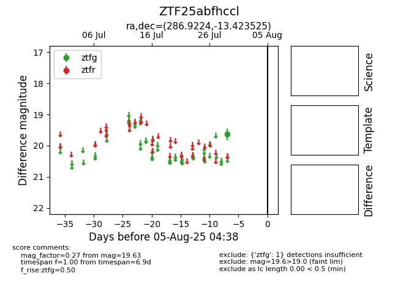

Target ZTF25abfhccl at 2025-08-05 04:38, see:
FINK: fink-portal.org/ZTF25abfhccl
Lasair: lasair-ztf.lsst.ac.uk/objects/ZTF25abfhccl
ALeRCE: alerce.online/object/ZTF25abfhccl
alt names
ZTF25abfhccl (ztf,fink)
coordinates:
equatorial (ra, dec) = (286.9224,-13.42353)
galactic (l, b) = (22.6970,-9.62448)
photometry
last ztfg=19.63
1 ztfg detections
